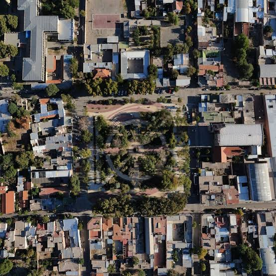
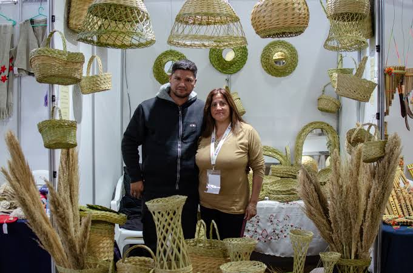

01 PAISAJE
Santa María Catamarca, Argentina
Entre montañas, historia y cultura, descubrí la esencia de Santa María, Catamarca.
Explorar destinoCatamarca Argentina

En el corazón de los Valles Calchaquíes, Santa María invita a descubrir un territorio donde los paisajes, las tradiciones y la historia forman parte de una identidad única.
Un destino para recorrer sin apuros, conocer sus raíces y disfrutar de la riqueza natural y cultural de Catamarca.
Descubrí nuestra historia01 Un viaje al ritmo del valle
Lugares para descubrir 02



Viví el destino 03
Un territorio para recorrer con tiempo, mirar de cerca y dejarse sorprender.


Cultura y tradiciones 04
Las expresiones culturales acompañan la vida del valle y mantienen vivo el vínculo con sus raíces.
Descubrir la cultura localGastronomía 05
Una invitación a descubrir los sabores y productos que forman parte de la mesa santamariana.
Explorar la gastronomía